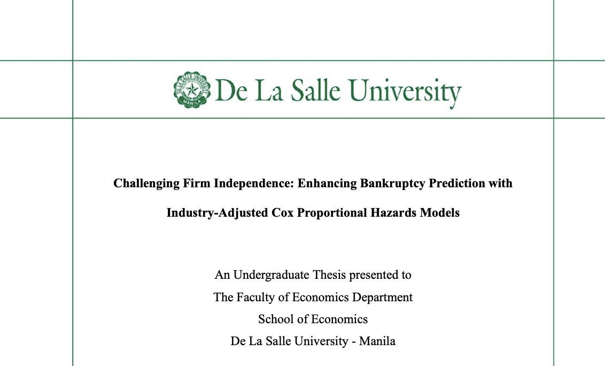
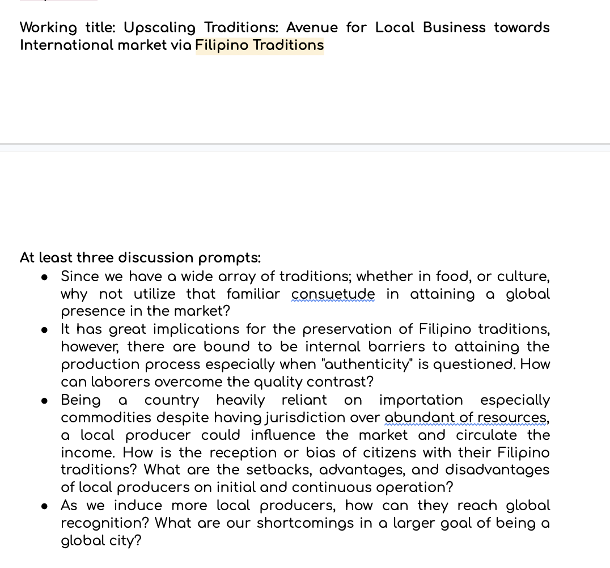
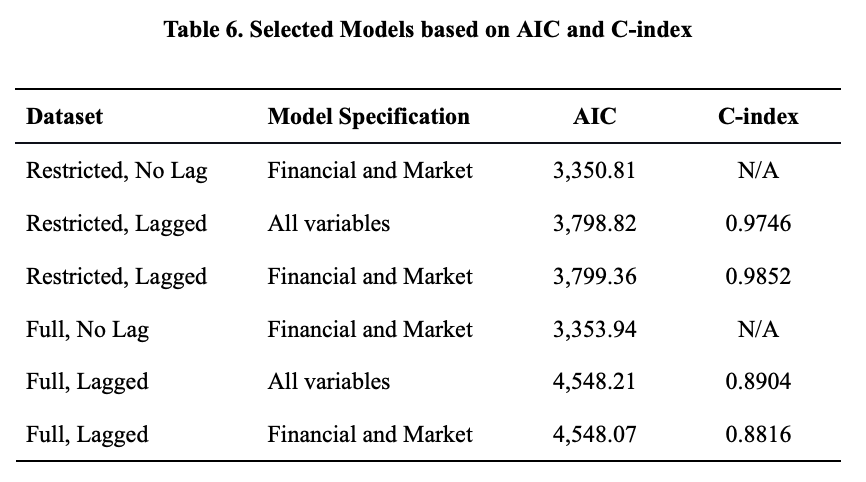

Academic Excellence
Academic Work Samples
A selection of research, projects, and academic outputs that demonstrate my analytical capabilities and professional readiness.
Challenging Firm Independence: Enhancing Bankruptcy Prediction with Industry-Adjusted Cox Proportional Hazards Models
Undergraduate Thesis · De La Salle University · 2024–2025
This study challenges a core assumption of one of the most widely used bankruptcy prediction tools in finance — the Cox Proportional Hazards Model (CPHM) — which treats all firms as failing independently of one another. In reality, firms within the same industry share common risk exposures, regulatory environments, and market shocks, making their financial distress events correlated, not independent.
Using data from publicly listed U.S. firms from 1999 to 2019, the industry-adjusted model materially outperformed the standard approach:
This finding has direct relevance to audit risk assessment, going-concern evaluations, and financial advisory — areas where accurate distress prediction is essential to protecting investors, creditors, and the public interest.

ECONORG Research Outputs
Research projects I led as Head of Research at the De La Salle Economics Organisation (2022–2024), examining macroeconomic and financial issues relevant to Philippine and global markets.


Financial Modelling / Data Analytics Project
A sample of technical coursework demonstrating proficiency in quantitative tools — Python, R, SQL, and Excel — applied to real financial analysis problems.
